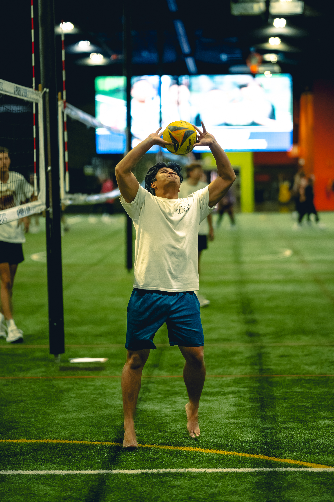
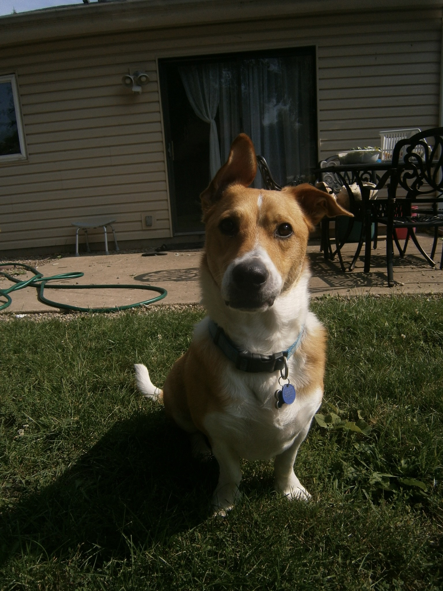

About
Get to Know Me
I was born in Thailand and moved to the US when I was 5 years old. I'm currently pursuing a Bachelor's degree in Computer Science at Lewis University, expected to graduate in May 2026. I am currently working at Francolleigh Technologies, a startup, as a Systems Software Engineer. I am constantly learning new things and sharpening my skills. I am very interested in machine learning, AI, automation, and web development. I am actively seeking an internship or entry-level position in Software Engineering, IT, or Data focused role.
Education
Lewis University: Bachelors in Computer Science | Graduating May 2026
College of DuPage: Associates in Software Development | August 2022 - May 2024
Skills
Programming Languages
- Python
- C++
- Java
- JavaScript
- MySQL
Tools & Platforms
- Git/GitHub
- Linux
- VS Code
- Microsoft Office
Areas of Interest
- Machine Learning
- AI
- Automation
- Data Analysis
- Web Development
Core Skills
- Data Structure & Algorithms
- Embedded Systems
- Problem Solving
- Object Oriented Programming
- File I/O
Hobbies
Volleyball
Started getting involved with Volleyball in 2022. Head coach for 2 seasons at 630 Volleyball. Volleyball has taught me the importance of teamwork, communication, and quick decision-making. On the court, every move counts, and I enjoy the challenge of strategizing with my team to achieve a common goal.

Dogs
I have 3 dogs, Hiro (right), Bunny, and Yuumi. I share my home with three amazing dogs who keep me active and entertained every day. Whether it’s going for walks, playing fetch, or just relaxing together, they’re a huge part of my life.

Brazilian Jiu-Jitsu
I took up Brazilian Jiu-Jitsu in May 2025 and recently earned my first stripe. It’s been an intense but exciting journey that keeps me active, humble, and motivated to keep progressing on the mats.
Cooking
I love spending time in the kitchen or outside on the grill, whether I’m trying out a new recipe or perfecting a family favorite. Cooking lets me relax, be creative, and share something meaningful with others.
Video Games
I’m a big fan of video games, especially League of Legends. Whether I’m climbing ranked or just playing casually with friends, it’s my way of mixing fun, strategy, and a bit of friendly competition.